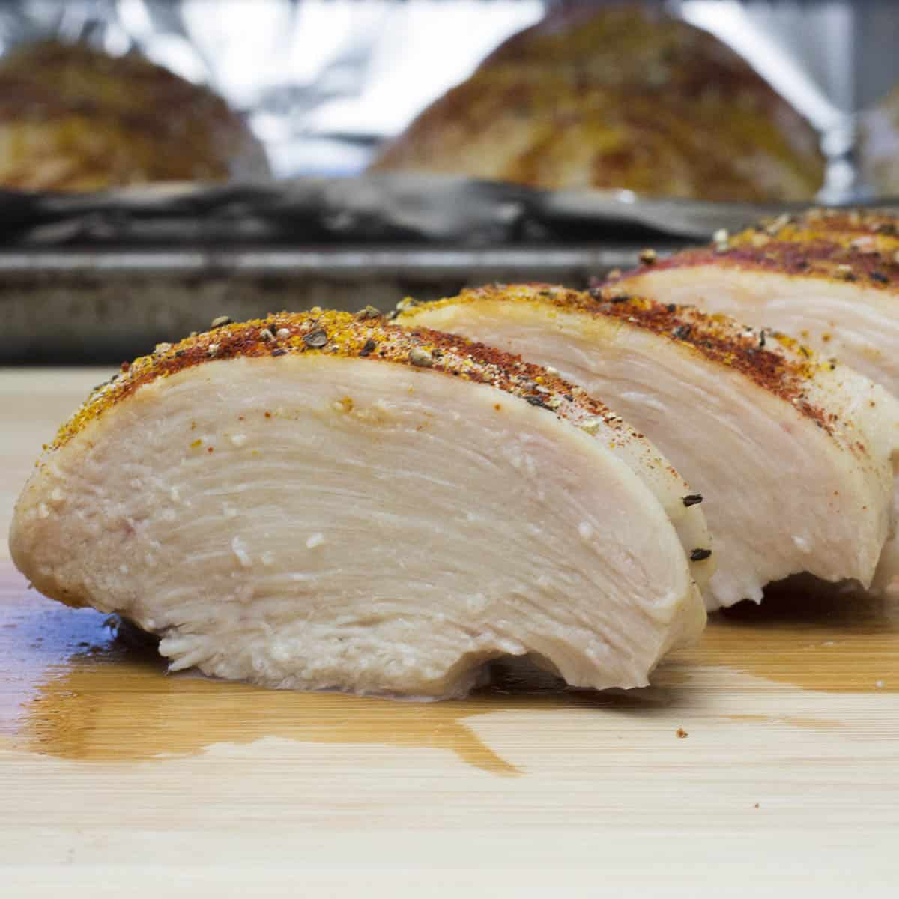

Cheddar Ranch Chicken

Description
This Cheddar Ranch Chicken is simple but tasty and low carb. With only a few minutes of prep you will have dinner in the oven.
Ingredients
- 2 pounds chicken
- 2 teaspoon minced garlic
- 1/2 cup mayo
- 1 cup cheddar cheese, shredded
- 1 packet ranch dressing
Instructions
- Preheat the oven to 400 degrees.
- In a large bowl mix together your garlic, mayo, cheese, and ranch.
- Spray a glass baking dish with nonstick spray.
- Place chicken in the baking dish.
- Spread mixture on top of the chicken.
- Bake for 30 minutes.